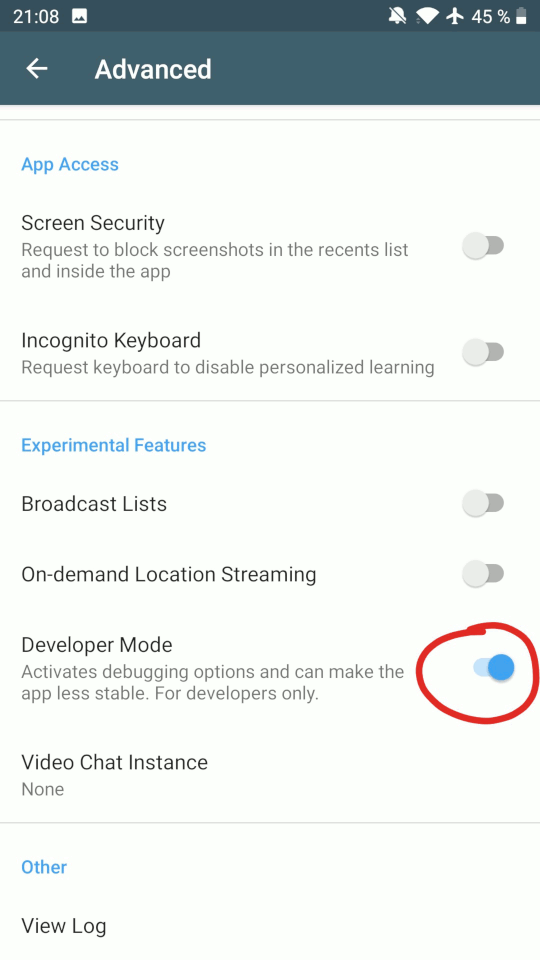
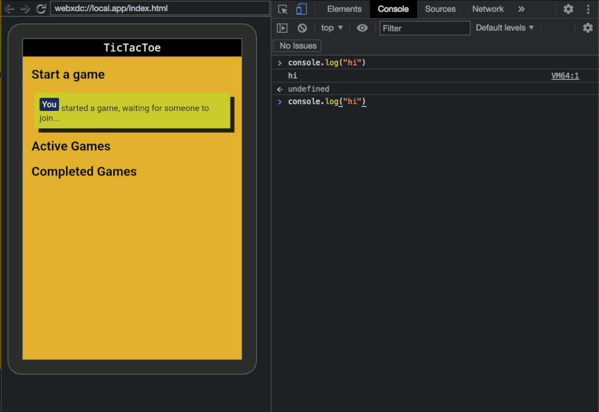
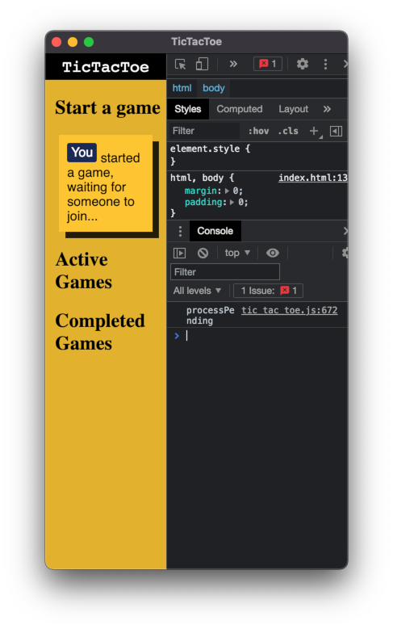
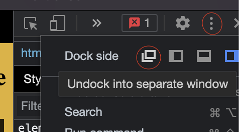

What is webxdc?
What kind of interactive content can be created with this?
Some ideas of what you can already create with webxdc.
- Games
- Singleplayer games with a shared highscore
- Multiplayer turn-based games (like tictactoe or chess)
- Productivity
- Collaborative Document editors
- Polls
Get started
First, you need to add the following script import to your index.html:
<script src="webxdc.js"></script>
This loads the platform specific webxdc.js which wraps the platform's internal calls to provide the same interface on all platforms.
There are 3 base cases you should handle in your code:
| case | what needs to be done |
|---|---|
| webxdc was just (re)started | make sure the handler set with setUpdateListener() can use the previous state updates to process the current state |
| state update arrives | define a handler for incoming state updates with setUpdateListener() |
| you want to send a new state update | send state updates with sendUpdate() |
You might find premade code snippet for what you need in our cookbook section, if you just want to add common things like a scoreboard to your game.
For testing and developing locally outside of deltachat you can use our webxdc dev tool
If you want to use Typescript or just completion in your IDE learn how to set that up here.
Also remember that the older devices might not have all new JavaScript features, so it is recommended to transpile your code down to an older JS version (see Transpile newer Javascript with Babel.js).
Packaging
- a Webxdc file is a ZIP-file with the extension
.xdc.- The zip file needs to contain all files that your
index.htmlneeds (scripts, css-stylesheets, images, fonts, etc.).- The resulting zipfile should be smaller than
100KB (kilobytes), we might raise this limit in the future.
So put the following into your zip file:
- your
index.htmlfile and all resources it needs - an
icon.pngoricon.jpg(info about required format) - a
manifest.tomlfile with your meta data. (documentation)
manifest.toml:
name = "My Webxdc Name"
Then rename your file's extention from .zip to .xdc.
Now you can send it into a deltachat chat and start using it right away, there is no certification or other bureaucracy required ;)
Chat Example
TODO - step by step coding the chat example and explaining each webxdc specific step
Using the Webxdc Development Tool
This is a little tool to make creation of webxdc content easier. It is found on https://github.com/deltachat/webxdc-dev.
Advantages:
- Super easy to get started.
- No server or installation required.
- You don't need your DeltaChat app for testing. (you save the packaging step)
Contents
The devtool has 2 parts:
webxdc.jswhich acts as simulatorcreate-xdc.sh, a script that packs your webxdc into a.xdcfile for you
Use the Simulator
For developing your webxdc, just copy the webxdc.js from the repo beside your index.html and you are ready to go.
Platform Quirks:
- On Safari you need to disable local file restrictions.
- On Android you might need to serve it using a local http server.
Click on Add Peer to add another instance.
Now you can test your webxdc while developing it with a simple reload, instead of repacking it and testing it inside of deltachat, also you don't need deltachat to develop webxdc content using this method.
Clear Storageresets the simulator (removes all previous state updates).
Use it as a template for your webxdc project
(fork and) clone https://github.com/deltachat/webxdc-dev
modify index.html to as you like, then open index.html in your webbrowser to try out your webxdc.
Developing in Safari
To use the devtool in safari you need to disable the local file restrictions
under Develop -> Disable Local File Restrictions:

After doing this you can use the dev tool simulator.
Make sure to reload (Cmd + R) all simulator tabs/windows to apply this setting.
Without this option Add Peer seems to work (it opens a new instance), but the instances will not be able to communicate.
Developing on Android
TODO - turn notes into a nice guide
-
install Termux
-
install python & git in termux (or is it preinstalled??)
-
git clone the devtool repo or your fork of it
-
use
python -m http.server(TODO check complete syntax) to serve it for development and use nano / vim -
when your done use the packaging script
-
and then copy the file to a location from where you can access and send it via deltachat.
-
pro tip: you can create symbolic link to a folder in the external storage
API Reference
JavaScript Interface
TODO, please refer to https://github.com/deltachat/deltachat-core-rust/blob/master/draft/webxdc-dev-reference.md in the meantime.
(could we generate the markdown from the TS definion file? - one less place to update docs and so on?)
Manifest file
If the ZIP-file contains a manifest.toml in its root directory, some basic information are read and used from there.
the manifest.toml has the following format
name = "My Webxdc Name"
name- The name of the webxdc. If no name is set or if there is no manifest, the filename is used as the name.
Webxdc Icon
If the ZIP-root contains an icon.png or icon.jpg, these files are used as the icon shown in deltachat. The icon should be a square at reasonable width/height; round corners etc. will be added by the implementations as needed. If no icon is set, a default icon will be used.
Zip File format .xdc
Just a zip file with the .zip extension renamed to .xdc.
Contents:
index.html: entry point- (optional)
manifest.toml: configuration file, specifying properties - (optional)
icon.pngoricon.jpg: the icon of the package
The ZIP-file can only use the compression methods
DeflateandStore. Other compression methods are not supported at this time.
Webxdc Cookbook
In this chapter you can find small code snippets (recipes) that help you implement some commonly used features, such as scoreboards for adding a highscore to your game.
Feel free to contribute recipies that you find useful on github.
(As this section is being written, you might find more examples in the core library).
Tips & Tricks
- Transpile newer Javascript with Babel.js
- Typescript support
- Debugging inside Deltachat
- Debugging with eruda.js
- Optimizing your Icon
- Troubleshooting
Transpile newer Javascript with Babel.js
Older devices might not have the newest javascript features/syntax in their webview, you may want to transpile your code down to an older js version eg. with https://babeljs.io
TODO guide, TODO find out what the oldest browser/webview version is that we support.
Targets:
- Desktop (electron -> is chrome 91)
- iOS (iOS 11 -> webkit 604.1.38)
- android (android 5 -> the webview system component can be updated by the user: https://play.google.com/store/apps/details?id=com.google.android.webview)
If you want to use a newer API make sure to check on https://caniuse.com. If you just want to use newer JavaScript syntax, babel.js is the right tool for you - it translates new JS into older JS, that can be interpreted.
Typescript support
How to get autocompletion for window.webxdc api in you IDE via typescript.
Get the typescript definitions
Just copy webxdc.d.ts into your source dir:
type SendingStatusUpdate<T> = {
/** the payload, deserialized json:
* any javascript primitive, array or object. */
payload: T;
/** optional, short, informational message that will be added to the chat,
* eg. "Alice voted" or "Bob scored 123 in MyGame";
* usually only one line of text is shown,
* use this option sparingly to not spam the chat. */
info?: string;
/** optional, short text, shown beside the icon;
* it is recommended to use some aggregated value,
* eg. "8 votes", "Highscore: 123" */
summary?: string;
};
type ReceivedStatusUpdate<T> = {
/** the payload, deserialized json */
payload: T;
/** the serial number of this update. Serials are larger than 0 and newer serials have higher numbers */
serial: number;
/** the maximum serial currently known */
max_serial: number;
/** optional, short, informational message. */
info?: string;
/** optional, short text, shown beside the webxdc's icon. */
summary?: string;
};
interface Webxdc<T> {
/** Returns the peer's own address.
* This is esp. useful if you want to differ between different peers - just send the address along with the payload,
* and, if needed, compare the payload addresses against selfAddr() later on. */
selfAddr: string;
/** Returns the peer's own name. This is name chosen by the user in their settings, if there is nothing set, that defaults to the peer's address. */
selfName: string;
/**
* set a listener for new status updates.
* The "serial" specifies the last serial that you know about (defaults to 0).
* Note that own status updates, that you send with {@link sendUpdate}, also trigger this method
* @returns promise that resolves when the listener has processed all the update messages known at the time when `setUpdateListener` was called.
* */
setUpdateListener(cb: (statusUpdate: ReceivedStatusUpdate<T>) => void, serial?: number): Promise<void>;
/**
* WARNING! This function is deprecated, see setUpdateListener().
*/
getAllUpdates(): Promise<ReceivedStatusUpdate<T>[]>;
/**
* Webxdcs are usually shared in a chat and run independently on each peer. To get a shared status, the peers use sendUpdate() to send updates to each other.
* @param update status update to send
* @param description short, human-readable description what this update is about. this is shown eg. as a fallback text in an email program.
*/
sendUpdate(update: SendingStatusUpdate<T>, description: string): void;
}
////////// ANCHOR: global
declare global {
interface Window {
webxdc: Webxdc<any>;
}
}
////////// ANCHOR_END: global
export { SendingStatusUpdate, ReceivedStatusUpdate, Webxdc };
you can find it also on https://github.com/deltachat/webxdc_docs/blob/master/webxdc.d.ts or just copy the code block above.
In the future this might become an @types npm module, but for now it is what it is: a simple file copy with no automatic updates.
Using the types
for using the types you need to import the file.
Using in typescript
import type { Webxdc } from './webxdc.d.ts'
Using in Javascript
/**
* @typedef {import('./webxdc').Webxdc} Webxdc
*/
This works in vscode nicely together with the //@ts-check comment on top of your source file.
If you want you can also type your own functions using JSDoc comments.
If you don't use vscode you can still make use of the type checking with the typescript compiler:
npm i -g typescript # -g stands for global installation tsc --noEmit --allowJs --lib es2015,dom *.js
Own Payload type
If you have a type for your state update payloads, replace the any in Webxdc<any> with your own payload type:
declare global {
interface Window {
webxdc: Webxdc<any>;
}
}
Debugging inside Deltachat
Debug your webxdc content in Android via Chrome DevTools
- enable webView debugging in delta chat settings
Settings>Advanced>Developer Mode:  - enable developer mode and ADB debugging on your device (go to system settings, device info, spam click on build number until there is a toast telling you that you are now a "Developer", then go into the developer menu that just appeared and enable "ADB debugging", see also android docs: Enable ADB debugging on your device).
- connect your device via USB to your computer
- open chromium (or google chrome) and go to
chrome://inspect/#devices - start your webxdc that you want to debug
- click on
inspect:

| Inpect HTML | Javascript Console |
|---|---|
 |  |
Make sure to disable adb debugging again after you are done with debugging!
Debug your webxdc content in DeltaChat Desktop
Start the webxdc you want to debug and press F12 to open the developer tools:

A bit small isn't it? fix it either by resizing the window's width or undock the developer tools:


Debug your webxdc content on the iOS DeltaChat
This is only possible in debug builds of deltachat-ios, not in the released App Store or TestFlight version, so please use debugging with eruda.js instead.
Debugging with eruda.js
When you can not use debugging inside Deltachat, either because you have no computer to connect to or are on iOS, you can use eruda.js as an alternative to the native dev tools.
Installing eruda
download eruda.min.js from [TODO link], copy it next to your index.html and then add this snippet into the head section of your index.html, before all other scripts:
<script src="eruda.min.js"></script>
<script>
eruda.init();
</script>
Using eruda
[TODO small introduction, how to open it (click on the button)]
Optimizing your Icon
There are several things you can do to shrink down the size of your icon:
- save without thumbnail image (in gimp it can be done in the export dialog)
- shrink the image resolution (
256pxare enough, in some cases128pxor even lower like64pxcan sufice) - change your PNG colors from
RGBtoIndexed(in gimpImage->Mode->Indexed, see https://docs.gimp.org/en/gimp-image-convert-indexed.html)
For
pngyou can also use theoxipngtool (https://github.com/shssoichiro/oxipng), which automagically optimizes your icon's file size without quality loss:oxipng icon.png -s -o maxIf you have png files in your project, you should also do this them to safe even more bytes.
Noteworthy parameters:
--pretendonly calculates gains-Zeven more compression, but takes longer- for more info see
oxipng --help
Troubleshooting
I cannot share variables on iOS between scripts!
Your code:
a.js
const CONFIG = { dificulty: "hard", hasCoins: true };
b.js
if (CONFIG.dificulty == "hard") {
/** make the game harder **/
}
index.html
<html>
<head>
<!-- ... -->
</head>
<body>
<!-- ... -->
<script src="a.js"></script>
<script src="b.js"></script>
</body>
</html>
Basically you get many errors in your JS console like this:
Can't find variable: CONFIG
There are a few ways to solve this:
- use a bundle to bundle all your JS to one file (some bundlers: parcel, webpack, esbuild)
- use esm modules (see https://developer.mozilla.org/en-US/docs/Web/JavaScript/Guide/Modules)
- define your variables as inline script in your HTML file. (inline script means that the script is in the HTML file between the
<script>tags:<script>my code</script>) - append your global variables to the window object:
window.myVar = 1;and use them likeconsole.log(window.myVar)
Example Projects
Here you can find some example projects. If you have a project that you want to share feel free to make a pull request to add it here on github. (Or just click on the edit icon in the top right corner, it will take you directly to editing this page)
Productivity
Games
- TicTacToe: https://github.com/Simon-Laux/tictactoe.xdc
- 2048: https://github.com/adbenitez/2048.xdc
- Chess Board: https://github.com/adbenitez/ChessBoard.xdc
- StackUp: https://github.com/adbenitez/StackUp.xdc
- Othello: https://github.com/adbenitez/Othello.xdc
Even more examples can be found searching for the #webxdc Topic on GitHub.
Community
You can ask questions and showcase your projects on the DeltaChat forum under the webxdc category: TODO link
You can login into the forum via DeltaChat, Github or by creating a normal account there.
UI Implementation instructions
- Deny all forms of internet access
- enable DOM storage (local storage, indexed db and co), but make sure it is scoped to each webxdc so they can not delete or modify the data of other webxdc content.
- load resources over the
webxdc:scheme and deny others (also, the UI should handlewebxdc:internally) - can be alsohttpsif ui does not support the custom scheme properly. - implement fetching
webxdc.jsover that scheme, should give back a JavaScript file wrapping all native API's to the interface described above. - info messages -> click on them should jump to their webxdc message